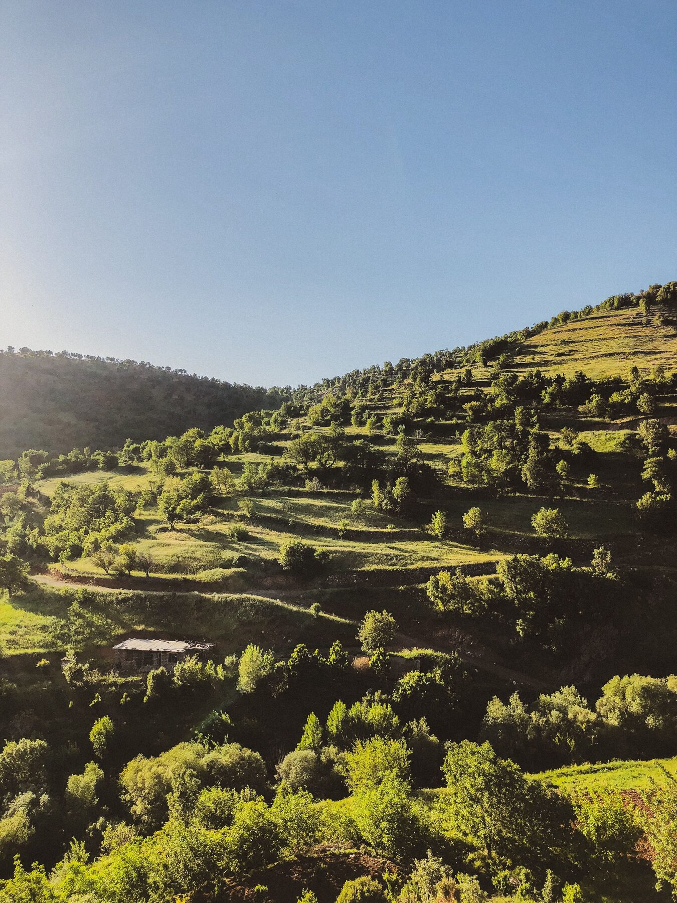
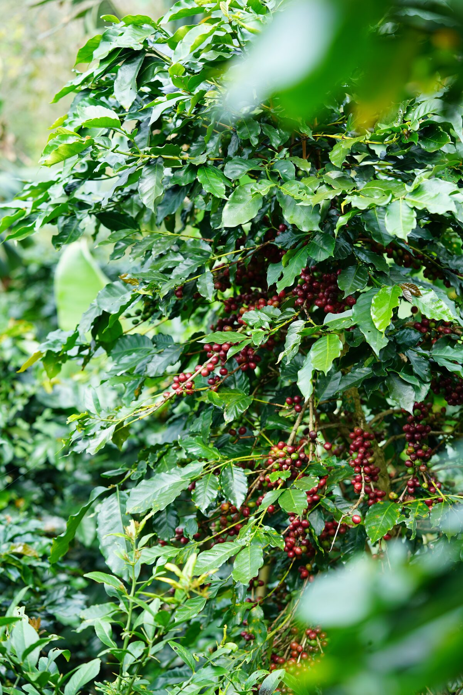
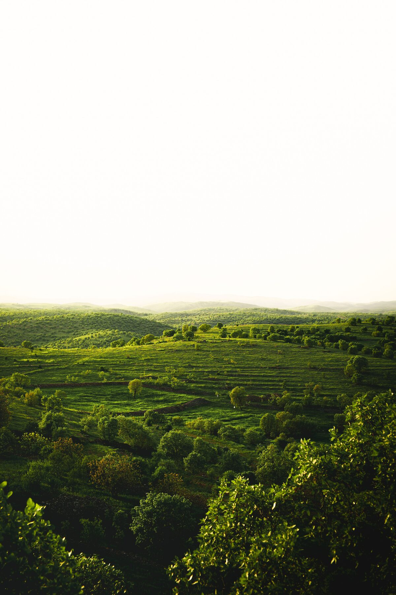

대표 영상 · 원작자·출처·이용허락 확인 필요
이태원에서 저희를 찾아보세요.
서울특별시 용산구 이태원동 193-1 1층 — 출발지에서의 경로와 소요 시간은 지도 길찾기로 확인해 주세요.
대표 영상입니다 — 실제 사진 촬영이 필요합니다.
디 진테제 카페 — 이태원 · 서울 · 대한민국
- 주소
- 서울특별시 용산구 이태원동 193-1 1층
193-1 Itaewon-dong, Yongsan-gu, Seoul - 영업시간
- 공식 소개 기준 월–금 09:00–18:00, 토·일 10:00–18:00.
변경·공휴일 운영은 방문 전 전화 또는 공식 소식으로 확인해 주세요. - 오시는 방법
- 출발지와 이동 수단을 지도에 입력해 최신 경로를 확인해 주세요.
길찾기
문의하기 →정확한 위치는 위 지도 검색과 길찾기에서 확인해 주세요.
이태원에서 볼 만한 곳.
이태원 방문과 함께 둘러볼 수 있는 장소들입니다. 이동 시간과 입장·운영 정보는 각 장소에서 확인하세요.
서울중앙성원
이태원 일대의 종교·문화 공간입니다. 방문 가능 시간과 예절, 출입 가능 구역은 방문 전에 확인해 주세요.
경리단길
이태원역 서쪽의 언덕길로, 개성 있는 카페와 부티크, 갤러리가 늘어서 있습니다. 커피 한 잔 후 산책하기 좋은 곳입니다.
해방촌(HBC)
남산 자락에 자리한 조용한 언덕 동네로, 서점과 바, 다양한 음식점이 모여 있습니다. 서울에서 가장 걷기 좋은 동네 중 하나입니다.
전쟁기념관
한국의 군사 역사를 다루는 대형 국립 박물관으로, 삼각지역에서 도보로 가깝습니다. 전시·운영 시간과 입장 조건은 방문 전에 확인해 주세요.
리움미술관
삼성가의 한국 전통 및 현대 미술 컬렉션을 소장한 미술관으로, 세 명의 서로 다른 건축가가 설계한 건물로도 알려져 있습니다.
남산공원 & N서울타워
남산으로 이어지는 숲길을 따라 오르면 N서울타워와 서울 시내를 한눈에 담을 수 있는 전망이 펼쳐집니다. 도보 또는 케이블카로 오를 수 있습니다.
지도 핀 아이콘은 이해를 돕기 위한 표시이며, 각 장소의 실제 사진은 아직 준비되지 않았습니다.
첫 잔은 여기서 시작됩니다.

대표 자료 · 원작자·원출처·이용허락 확인 후 게시
도착
이태원동 193-1, 스트리트 레벨에서 만나요.

대표 자료 · 원작자·원출처·이용허락 확인 후 게시
선택
로트, 가공법, 혹은 그날의 기분을 말씀해주시면 바에서 골라드립니다.

대표 자료 · 원작자·원출처·이용허락 확인 후 게시
경험
자리에 앉아 궁금한 걸 물어보고, 한 잔씩 예멘을 맛보세요.
예멘에서. 서울을 지나. 그리고 그 너머로.
자주 묻는 질문
정확한 이동 시간은 어떻게 확인하나요?
출발지와 이동 수단에 따라 다릅니다. 네이버·카카오·Google 지도에서 매장 주소를 검색하고 길찾기를 이용해 주세요.
공휴일 영업도 동일한가요?
공휴일·임시 휴무·마감 시간은 방문 전에 매장에 확인해 주세요.
자료 확인: 2026-10-17 · 공식 브랜드 소개 · 공식 이용안내. 최신 운영·가격·재고는 공식 채널에서 확인하세요.